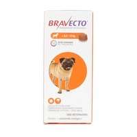
Antipulgas e Carrapatos Bravecto 45 a 10 kg sem sombra
Antipulgas e Carrapatos Bravecto 45 a 10 kg sem sombra
ITAPETS - O Paraíso dos seus Pets

Antipulgas e Carrapatos Bravecto 45 a 10 kg sem sombra
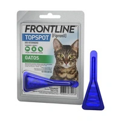
Antipulgas e Carrapatos Frontline TopSpot para Gatos
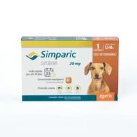
Antipulgas Simparic 20mg para Caes 5 a 10kg
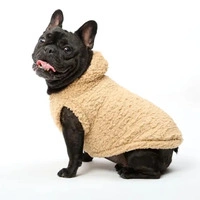
Blusão Feminino Moletom Canguru Diagonal Bicolor
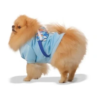
Blusao Originals para Cães e Gatos Emporium Distripet Azul
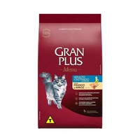
GP Menu Gato Adulto Castrado Sabor Frango e Arroz FRONTAL
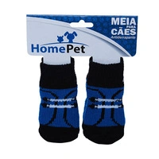
Meia Sapato para Cães Azul HomePet
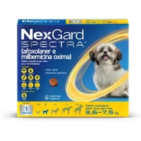
NexGard Spectra 36kg a 75kg Antipulgas Carrapatos e Vermifugo embalagem_FRENTE-01
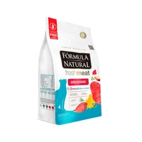
Racão Formula Natural Fresh Meat Gatos Castrados Carne
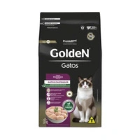
Racão Golden Gatos Castrados Frango 1-1
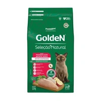
Racão Golden Selecao Natural Gatos Castrados Frango Com Batata Doce 1-1
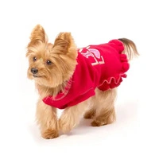
Vestido Live Love Vermelho Bichinho Chic
A ItaPets é uma empresa criada para oferecer produtos de qualidade e praticidade para quem deseja proporcionar o melhor cuidado aos seus animais de estimação. Nosso objetivo é facilitar a vida dos donos de pets, reunindo em um só lugar produtos essenciais para alimentação, higiene, conforto, diversão e bem-estar dos animais. Trabalhamos para oferecer uma experiência simples e agradável, permitindo que nossos clientes encontrem tudo o que seus pets precisam de forma rápida e segura. Na ItaPets, acreditamos que os animais de estimação fazem parte da família e merecem todo o carinho, cuidado e atenção. Por isso, buscamos disponibilizar produtos que contribuam para uma vida mais saudável, confortável e feliz para os pets.
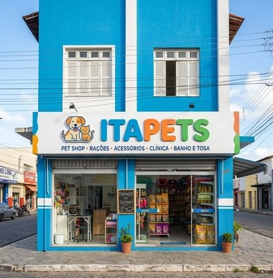
Entregamos produtos de alta qualidade para todo o Brasil.
Qualidade é a nossa prioridade. Trabalhamos apenas com produtos que atendem aos mais altos padrões de qualidade, garantindo a satisfação dos nossos clientes.
Atendimento humanizado para pets e seus donos.
Preço justo para produtos de alta qualidade.
Entre em contato conosco através do número de telefone: (79) 9 9638-9774